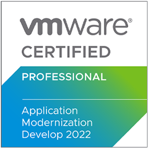

Сертификация Professional Develop VMware Spring 2022
|
 |
Exam information
- Number of Questions: 60
- Passing score: 300 (scaled)
- Duration: 130 Minutes
- Language: English
- Format: Single and Multiple Choice, Proctored
- Passing Score: VMware exams are scaled on a range from 100-500, with the determined raw
cut score scaled to a value of 300. Your exam may contain unscored questions in addition to
the scored questions, this is a standard testing practice. You will not know which questions are
unscored, your exam results will reflect your performance on the scored questions only.
Exam Sections
- Section 1 – Spring Core
- Objective 1.1 Introduction to Spring Framework
- Objective 1.2 Java Configuration
- 1.2.1 Define Spring Beans using Java code
- 1.2.2 Access Beans in the Application Context
- 1.2.3 Handle multiple Configuration files
- 1.2.4 Handle Dependencies between Beans
- 1.2.5 Explain and define Bean Scopes
- Objective 1.3 Properties and Profiles
- 1.3.1 Use External Properties to control Configuration
- 1.3.2 Demonstrate the purpose of Profiles
- 1.3.3 Use the Spring Expression Language (SpEL)
- Objective 1.4 Annotation-Based Configuration and Component Scanning
- 1.4.1 Explain and use Annotation-based Configuration
- 1.4.2 Discuss Best Practices for Configuration choices
- 1.4.3 Use @PostConstruct and @PreDestroy
- 1.4.4 Explain and use “Stereotype” Annotations
- Objective 1.5 Spring Bean Lifecycle
- 1.5.1 Explain the Spring Bean Lifecycle
- 1.5.2 Use a BeanFactoryPostProcessor and a BeanPostProcessor
- 1.5.3 Explain how Spring proxies add behavior at runtime
- 1.5.4 Describe how Spring determines bean creation order
- 1.5.5 Avoid issues when Injecting beans by type
- Objective 1.6 Aspect Oriented Programming
- 1.6.1 Explain the concepts behind AOP and the problems that it solves
- 1.6.2 Implement and deploy Advices using Spring AOP
- 1.6.3 Use AOP Pointcut Expressions
- 1.6.4 Explain different types of Advice and when to use them
- Section 2 – Data Management
- Objective 2.1 Introduction to Spring JDBC
- 2.1.1 Use and configure Spring’s JdbcTemplate
- 2.1.2 Execute queries using callbacks to handle result sets
- 2.1.3 Handle data access exceptions
- Objective 2.2 Transaction Management with Spring
- 2.2.1 Describe and use Spring Transaction Management
- 2.2.2 Configure Transaction Propagation
- 2.2.3 Setup Rollback rules
- 2.2.4 Use Transactions in Tests
- Objective 2.3 Spring Boot and Spring Data for Backing Stores
- 2.3.1 Implement a Spring JPA application using Spring Boot
- 2.3.2 Create Spring Data Repositories for JPA
- Section 3 – Spring MVC
- Objective 3.1 Web Applications with Spring Boot
- 3.1.1 Explain how to create a Spring MVC application using Spring Boot
- 3.1.2 Describe the basic request processing lifecycle for REST requests
- 3.1.3 Create a simple RESTful controller to handle GET requests
- 3.1.4 Configure for deployment
- Objective 3.2 REST Applications
- 3.2.1 Create controllers to support the REST endpoints for various verbs
- 3.2.2 Utilize RestTemplate to invoke RESTful services
- Section 4 – Testing
- Objective 4.1 Testing Spring Applications
- 4.1.1 Write tests using JUnit 5
- 4.1.2 Write Integration Tests using Spring
- 4.1.3 Configure Tests using Spring Profiles
- 4.1.4 Extend Spring Tests to work with Databases
- Objective 4.2 Advanced Testing with Spring Boot and MockMVC
- 4.2.1 Enable Spring Boot testing
- 4.2.2 Perform integration testing
- 4.2.3 Perform MockMVC testing
- 4.2.4 Perform slice testing
- Section 5 – Security
- Objective 5.1 Explain basic security concepts
- Objective 5.2 Use Spring Security to configure Authentication and Authorization
- Objective 5.3 Define Method-level Security
- Section 6 – Spring Boot
- Objective 6.1 Spring Boot Feature Introduction
- 6.1.1 Explain and use Spring Boot features
- 6.1.2 Describe Spring Boot dependency management
- Objective 6.2 Spring Boot Properties and Autoconfiguration
- 6.2.1 Describe options for defining and loading properties
- 6.2.2 Utilize auto-configuration
- 6.2.3 Override default configuration
- Objective 6.3 Spring Boot Actuator
- 6.3.1 Configure Actuator endpoints
- 6.3.2 Secure Actuator HTTP endpoints
- 6.3.3 Define custom metrics
- 6.3.4 Define custom health indicators
References
|